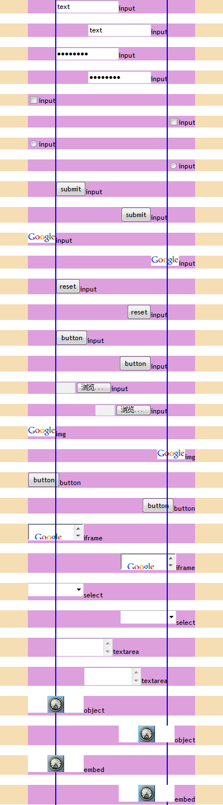
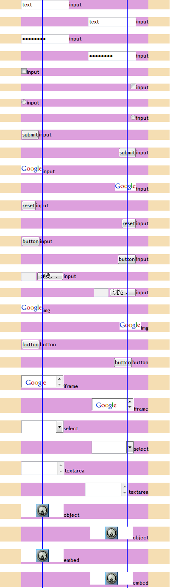

RB1006: IE6 IE7 IE8(Q) 中触发了 hasLayout 的元素若包含 TEXTAREA 元素及某些 type 的 INPUT 元素，其 'margin-left' 和 'margin-right' 会与预期不符
标准参考
根据 CSS2.1 规范中的描述，margin 系列特性指定了一个框的 margin
area 的宽度，盒模型示意图如下：

关于 margin 与 盒模型 的更多信息，请参见 CSS2.1 规范 8.1 Box dimensions 和 8.3 Margin properties 中的内容。
问题描述
IE6 IE7 IE8(Q) 中，若一个触发了 hasLayout 的元素其内第一个非空白节点 (即 children[0]) 为 TEXTAREA 元素 或者 type 属性值为 text、password、submit、reset、button、file 的 INPUT 元素，并且这个元素设定了 'margin-left'、'margin-right' 特性，则 'margin-left'、'margin-right' 特性指定的值会应用于其相应方向的 padding 上。
造成的影响
此问题可能导致设定 'margin-left'、'margin-right' 在 IE6 IE7 IE8(Q) 与其他浏览器中产生差异，从而影响布局。
受影响的浏览器
| IE6 IE7 IE8(Q) |
|---|
问题分析
对于此问题，我们通过以下的测试用例来说明。
分析以下代码：
<!DOCTYPE html> <html> <head> <style> * { margin:0; padding:0; font:12px
'Trebuchet MS'; } </style> </head> <body> <div style="width:400px;
position:relative;"> <div style="background:wheat;"> <div
style="background:plum; zoom:1; margin:0 50px;"> <input id="i1"
type="text" value="text" />input </div> </div> <br /> <div
style="background:wheat;"> <div style="background:plum; zoom:1; margin:0 50px;
text-align:right;"> <input id="i2" type="text" value="text"
/>input </div> </div> <br /> <div style="background:wheat;">
<div style="background:plum; zoom:1; margin:0 50px;"> <input id="i1"
type="password" value="password" />input </div> </div> <br />
<div style="background:wheat;"> <div style="background:plum; zoom:1; margin:0
50px; text-align:right;"> <input id="i2" type="password"
value="password" />input </div> </div> <br /> <div
style="background:wheat;"> <div style="background:plum; zoom:1; margin:0
50px;"> <input id="i1" type="checkbox" value="checkbox"
/>input </div> </div> <br /> <div style="background:wheat;">
<div style="background:plum; zoom:1; margin:0 50px; text-align:right;"> <input
id="i2" type="checkbox" value="checkbox" />input </div>
</div> <br /> <div style="background:wheat;"> <div
style="background:plum; zoom:1; margin:0 50px;"> <input id="i1"
type="radio" value="radio" />input </div> </div> <br /> <div
style="background:wheat;"> <div style="background:plum; zoom:1; margin:0 50px;
text-align:right;"> <input id="i2" type="radio" value="radio"
/>input </div> </div> <br /> <div style="background:wheat;">
<div style="background:plum; zoom:1; margin:0 50px;"> <input id="i1"
type="submit" value="submit" />input </div> </div> <br />
<div style="background:wheat;"> <div style="background:plum; zoom:1; margin:0
50px; text-align:right;"> <input id="i2" type="submit"
value="submit" />input </div> </div> <br /> <div
style="background:wheat;"> <div style="background:plum; zoom:1; margin:0
50px;"> <input id="i1" type="image" src="google_small.gif"
/>input </div> </div> <br /> <div style="background:wheat;">
<div style="background:plum; zoom:1; margin:0 50px; text-align:right;"> <input
id="i2" type="image" src="google_small.gif" />input </div>
</div> <br /> <div style="background:wheat;"> <div
style="background:plum; zoom:1; margin:0 50px;"> <input id="i1"
type="reset" value="reset" />input </div> </div> <br /> <div
style="background:wheat;"> <div style="background:plum; zoom:1; margin:0 50px;
text-align:right;"> <input id="i2" type="reset" value="reset"
/>input </div> </div> <br /> <div style="background:wheat;">
<div style="background:plum; zoom:1; margin:0 50px;"> <input id="i1"
type="button" value="button" />input </div> </div> <br />
<div style="background:wheat;"> <div style="background:plum; zoom:1; margin:0
50px; text-align:right;"> <input id="i2" type="button"
value="button" />input </div> </div> <br /> <div
style="background:wheat;"> <div style="background:plum; zoom:1; margin:0
50px;"> <input id="i1" type="file" value="file"
style="width:100px;" />input </div> </div> <br /> <div
style="background:wheat;"> <div style="background:plum; zoom:1; margin:0 50px;
text-align:right;"> <input id="i2" type="file" value="file"
style="width:100px;" />input </div> </div> <br /> <div
style="background:wheat;"> <div style="background:plum; zoom:1; margin:0
50px;"> <img src="google_small.gif" />img </div> </div> <br />
<div style="background:wheat;"> <div style="background:plum; zoom:1; margin:0
50px; text-align:right;"> <img src="google_small.gif" />img </div>
</div> <br /> <div style="background:wheat;"> <div
style="background:plum; zoom:1; margin:0 50px;"> <button>button</button>button
</div> </div> <br /> <div style="background:wheat;"> <div
style="background:plum; zoom:1; margin:0 50px; text-align:right;">
<button>button</button>button </div> </div> <br /> <div
style="background:wheat;"> <div style="background:plum; zoom:1; margin:0
50px;"> <iframe style="width:100px; height:30px;"
src="google_small.gif"></iframe>iframe </div> </div> <br /> <div
style="background:wheat;"> <div style="background:plum; zoom:1; margin:0 50px;
text-align:right;"> <iframe style="width:100px; height:30px;"
src="google_small.gif"></iframe>iframe </div> </div> <br /> <div
style="background:wheat;"> <div style="background:plum; zoom:1; margin:0
50px;"> <select style="width:100px; height:30px;"></select>select
</div> </div> <br /> <div style="background:wheat;"> <div
style="background:plum; zoom:1; margin:0 50px; text-align:right;"> <select
style="width:100px; height:30px;"></select>select </div> </div> <br
/> <div style="background:wheat;"> <div style="background:plum; zoom:1;
margin:0 50px;"> <textarea style="width:100px;
height:30px;"></textarea>textarea </div> </div> <br /> <div
style="background:wheat;"> <div style="background:plum; zoom:1; margin:0 50px;
text-align:right;"> <textarea style="width:100px;
height:30px;"></textarea>textarea </div> </div> <br /> <div
style="background:wheat;"> <div style="background:plum; zoom:1; margin:0
50px;"> <object type="application/x-shockwave-flash" style="width:100px;
height:30px;" data="clock.swf"> <param name="src"
value="clock.swf" /> </object>object </div> </div> <br /> <div
style="background:wheat;"> <div style="background:plum; zoom:1; margin:0 50px;
text-align:right;"> <object type="application/x-shockwave-flash"
style="width:100px; height:30px;" data="clock.swf"> <param
name="src" value="clock.swf" /> </object>object </div> </div>
<br /> <div style="background:wheat;"> <div style="background:plum;
zoom:1; margin:0 50px;"> <embed type="application/x-shockwave-flash"
style="width:100px; height:30px;" src="clock.swf"></embed>embed
</div> </div> <br /> <div style="background:wheat;"> <div
style="background:plum; zoom:1; margin:0 50px; text-align:right;"> <embed
type="application/x-shockwave-flash" style="width:100px; height:30px;"
src="clock.swf"></embed>embed </div> </div> <div
style="position:absolute; top:0; left:99px; background:blue; width:2px;
height:1500px;"></div> <div style="position:absolute; top:0; right:99px;
background:blue; width:2px; height:1500px;"></div> </div> </body>
</html>
上面代码分为若干组，各组中均按照问题描述中的结构编写代码，区别为触发了 hasLayout 的元素内的第一个非空白节点不同。
这段代码在不同的浏览器环境中的表现如下：| IE6 IE7 IE8(Q) | IE8(S) Firefox Opera Safari Chrome |
|---|---|
|  |  |
然而根据上面的测试代码的结果可见，
- 在 IE6 IE7 IE8(Q) 下，触发了 hasLayout 的元素其内第一个非空白节点 (即 children[0]) 为 TEXTAREA 元素 或者 type 属性值为 text、password、submit、reset、button、file 的 INPUT 元素，并且这个元素设定了 'margin-left'、'margin-right' 特性，则 'margin-left'、'margin-right' 特性指定的值会应用于其相应方向的 padding 上。但这块多余的区域并不是 padding。
- 在 IE8(S) Firefox Chrome Safari Opera 下，浏览器按照 W3C 的规范对代码进行解释，为我们预期的效果。
解决方案
在 INPUT、TEXTAREA 元素之前放一个触发了 hasLayout 的空 SPAN 元素。
例如：
<span style="zoom:1;"></span>
参见
知识库
相关问题
测试环境
| 操作系统版本: | Windows 7 Ultimate build 7600 |
|---|---|
| 浏览器版本: |
IE6
IE7 IE8 Firefox 3.6.10 Chrome 7.0.517.17 dev Safari 5.0.2 Opera 10.62 |
| 测试页面: | IE67_DM.html |
| 本文更新时间: | 2010-09-25 |
关键字
margin hasLayout input textarea